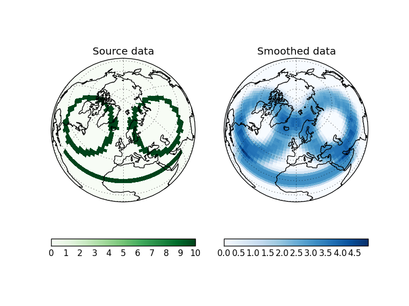

Contents:
The GridSmoother class is designed to smooth latitude-longitude fields with a true spatial smoothing function rather than a function of grid index (noting that grid cells become much smaller close to the poles).
For example the following image shows an N48 field smoothed with a 10 degree radial cap function (i.e. smoothing function returns 1 for angular separations less than or equal to 10).
